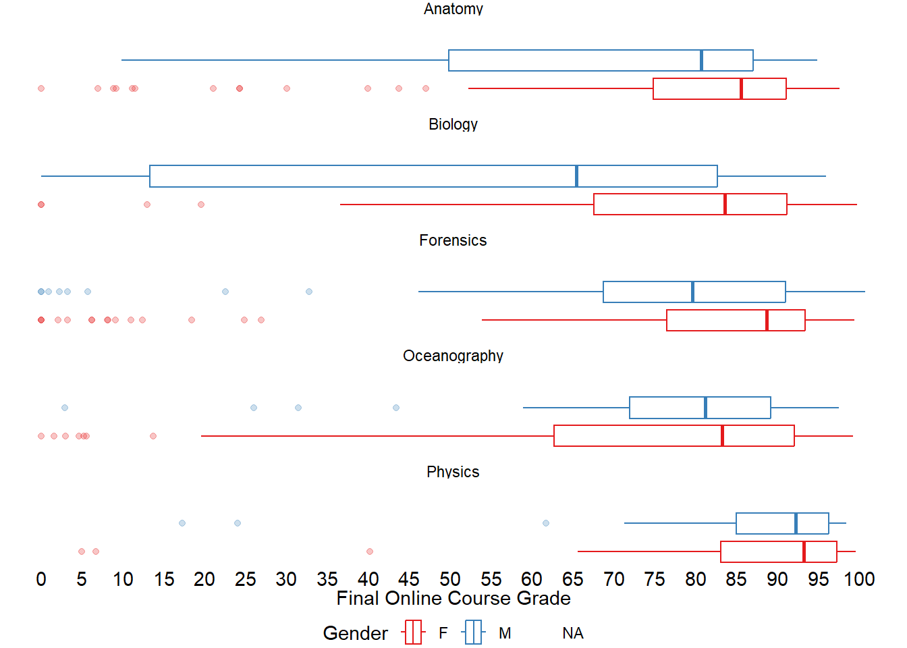
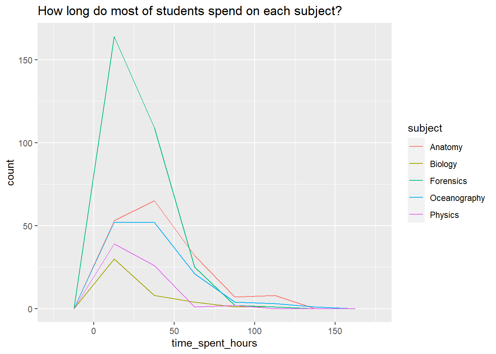
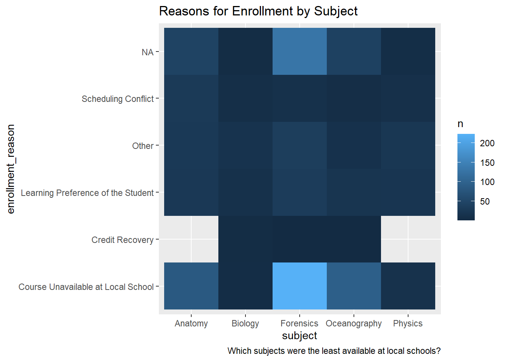
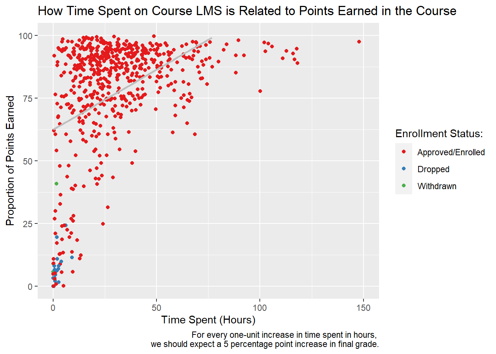

Code
# load packages
library(tidyverse)
library(here)
library(kableExtra)DS Final Project
Problem Statement: Macfadyen, L. P., & Dawson, S. (2010). Mining LMS data to develop an “early warning system” for educators: A proof of concept. Computers & education, 54(2), 588-599. This article is focused on “early warning systems” in higher education, and where adoption of learning management systems (LMS) like Moodle and Canvas gained a quicker foothold, this study is particularly relevant since COVID-19. Many districts across the county have incorporated a LMS into their remote instruction and have set up virtual academies likely to continue post-pandemic. In North Carolina specifically, student disengagement has become a particular concern among districts and the NC Department of Public Instruction has recently established the Office of Learning Recovery & Acceleration Office of Learning Recovery & AccelerationOffice of Learning Recovery & Acceleration.
What is the relationship between proportioned earned and gender?
What is the relationship between time spent in hours compared to each subject?
What is the relationship between time spent and science interest?
What does the reasons for enrollment tell us?
Does time spent predict grade earned?
For age, I will first determine the median age of the players and then create numerical summaries of players older and younger than that point. Use numerical summaries of age compared to: Categorical data: Team, League, Position Numerical data: Assists, number of minutes Use categorical variables (league and player name) compared to numerical values of number of goals for scoring trends.
After ranking teams in terms of age trends, I will then compare this summary data to performance in the group phase of the World Cup (which will be completed prior to due date).
I plan to use visualizations in a final dashboard.
First, to prepare the analysis we must first add the necessary libraries needed. For instance we will use a suite of libraries within the Tidyverse Pacakge. We will also load the here package to import our datasets.
Tidyverse:The tidyverse is a collection of R packages designed for data manipulation, visualization, and analysis.
Here: It provides a simple way to manage file paths in your R projects.
# load packages
library(tidyverse)
library(here)
library(kableExtra)We will load the datasets that we will be using in this analysis. The datasets consist of log trace data, academic data and self reported survey data.
Log-trace data is data generated from our interactions with digital technologies, such as archived data from social media postings. In education, an increasingly common source of log-trace data is that generated from interactions with LMS and other digital tools. It is a summary type of log-trace data: the number of minutes students spent on the course.
Using the read_csv() function from {readr} and the here function from the {here} pacakage to import our log-data.csv file directly from our data folder and name this data set time_spent.
#load with here package
time_spent <- read_csv(here("data", "log-data.csv"))
#inspect data
time_spent# A tibble: 716 × 6
student_id course_id gender enrollment_reason enrol…¹ time_…²
<dbl> <chr> <chr> <chr> <chr> <dbl>
1 60186 AnPhA-S116-01 M Course Unavailable at Local … Approv… 2087.
2 66693 AnPhA-S116-01 M Course Unavailable at Local … Approv… 2309.
3 66811 AnPhA-S116-01 F Course Unavailable at Local … Approv… 5299.
4 66862 AnPhA-S116-01 F Course Unavailable at Local … Approv… 1747.
5 67508 AnPhA-S116-01 F Scheduling Conflict Approv… 2668.
6 70532 AnPhA-S116-01 F Learning Preference of the S… Approv… 2938.
7 77010 AnPhA-S116-01 F Learning Preference of the S… Approv… 1533.
8 85249 AnPhA-S116-01 F Course Unavailable at Local … Approv… 1210.
9 85411 AnPhA-S116-01 F Scheduling Conflict Approv… 473.
10 85583 AnPhA-S116-01 F Scheduling Conflict Approv… 5532.
# … with 706 more rows, and abbreviated variable names ¹enrollment_status,
# ²time_spentWe’ll load the academic achievement data in the same way and and name this data set gradebook:
#load data 2: Academic Achievement
gradebook <- read_csv(here("data", "gradebook-summary.csv"))
#inspect data with glimpse
glimpse(gradebook)Rows: 717
Columns: 4
$ student_id <dbl> 43146, 44638, 47448, 47979, 48797, 51943, 52326,…
$ course_id <chr> "FrScA-S216-02", "OcnA-S116-01", "FrScA-S216-01"…
$ total_points_possible <dbl> 1217, 1676, 1232, 1833, 2225, 1222, 1775, 2225, …
$ total_points_earned <dbl> 1150.00, 1384.23, 1116.00, 1492.73, 1994.75, 70.…The third data source is a self-report survey we will load it and name this data set survey.
This was data collected before the start of the course. The survey included ten items, each corresponding to one of three motivation measures: interest, utility value, and perceived competence.
These were chosen for their alignment with one way to think about students’ motivation, to what extent they expect to do well (corresponding to their perceived competence) and their value for what they are learning (corresponding to their interest and utility value).
#load data 3:Self-Report Survey
survey <- read_csv(here("data", "survey.csv"))
#inspect first five lines of data
head(survey)# A tibble: 6 × 26
studen…¹ cours…² subject semes…³ section int val percomp tv q1 q2
<chr> <chr> <chr> <chr> <chr> <dbl> <dbl> <dbl> <dbl> <dbl> <dbl>
1 43146 FrScA-… FrScA S216 02 4.2 3.67 4 3.86 4 4
2 44638 OcnA-S… OcnA S116 01 4 3 3 3.57 4 2
3 47448 FrScA-… FrScA S216 01 4.2 3 3 3.71 5 3
4 47979 OcnA-S… OcnA S216 01 4 3.67 2.5 3.86 4 3
5 48797 PhysA-… PhysA S116 01 3.8 3.67 3.5 3.71 4 4
6 51943 FrScA-… FrScA S216 03 3.8 3.67 3.5 3.71 4 4
# … with 15 more variables: q3 <dbl>, q4 <dbl>, q5 <dbl>, q6 <dbl>, q7 <dbl>,
# q8 <dbl>, q9 <dbl>, q10 <dbl>, date.x <dttm>, post_int <dbl>,
# post_uv <dbl>, post_tv <dbl>, post_percomp <dbl>, date.y <dttm>,
# date <dttm>, and abbreviated variable names ¹student_ID, ²course_ID,
# ³semesterWe want to join our data so we will need to tidy the data to get each dataset to join correctly. Each variable haas to match while we use a full join.
First, separate course id variable into three new variables subject, section and semester.
Second, divide time spent in minutes to time spent in hourse by dividing by 60.
#Separate course id into new variable names
time_spent_2 <- time_spent %>%
separate(course_id,
c("subject", "section", "semester"))
# mutate minutes to hours on time spent and save as new variable.
time_spent_2 <- time_spent_2 %>%
mutate(time_spent_hours = time_spent / 60)Now, we will work on the Gradebook dataset.Like the previous dataset, we will seperate course_id variable again.
# separate the course_id variable
gradebook <- gradebook %>%
separate(course_id, c("subject", "section", "semester"))
# Mutate to a proportion, take total points earned divide by total points. Save as new variable proportion_earned.
gradebook <- gradebook %>%
mutate(proportion_earned = (total_points_earned / total_points_possible * 100))
gradebook# A tibble: 717 × 7
student_id subject section semester total_points_possible total_poi…¹ propo…²
<dbl> <chr> <chr> <chr> <dbl> <dbl> <dbl>
1 43146 FrScA S216 02 1217 1150 94.5
2 44638 OcnA S116 01 1676 1384. 82.6
3 47448 FrScA S216 01 1232 1116 90.6
4 47979 OcnA S216 01 1833 1493. 81.4
5 48797 PhysA S116 01 2225 1995. 89.7
6 51943 FrScA S216 03 1222 70 5.73
7 52326 AnPhA S216 01 1775 1519. 85.5
8 52446 PhysA S116 01 2225 2198 98.8
9 53447 FrScA S116 01 1212 1173 96.8
10 53475 FrScA S116 02 1212 0 0
# … with 707 more rows, and abbreviated variable names ¹total_points_earned,
# ²proportion_earnedNow, we will work on third data source. In this analysis we will use janitor to clean some of the variable names.
View(survey)
# load janitor to clean variable names that do not match
library(janitor)
#clean column
survey <- clean_names(survey)
#separate course_id in survey by subject. section and semester
survey <- survey %>%
separate(course_id, c("subject", "section", "semester"))
#inspect data to check for consistency with other data
survey# A tibble: 662 × 25
student…¹ subject section semes…² int val percomp tv q1 q2 q3
<chr> <chr> <chr> <chr> <dbl> <dbl> <dbl> <dbl> <dbl> <dbl> <dbl>
1 43146 FrScA S216 02 4.2 3.67 4 3.86 4 4 4
2 44638 OcnA S116 01 4 3 3 3.57 4 2 2
3 47448 FrScA S216 01 4.2 3 3 3.71 5 3 3
4 47979 OcnA S216 01 4 3.67 2.5 3.86 4 3 2
5 48797 PhysA S116 01 3.8 3.67 3.5 3.71 4 4 3
6 51943 FrScA S216 03 3.8 3.67 3.5 3.71 4 4 3
7 52326 AnPhA S216 01 3.6 4 3 4 4 4 4
8 52446 PhysA S116 01 4.2 3.67 3 4 4 4 3
9 53447 FrScA S116 01 3.8 2 3 3 5 2 3
10 53475 FrScA S216 01 4.8 3.33 4 4.14 5 4 4
# … with 652 more rows, 14 more variables: q4 <dbl>, q5 <dbl>, q6 <dbl>,
# q7 <dbl>, q8 <dbl>, q9 <dbl>, q10 <dbl>, date_x <dttm>, post_int <dbl>,
# post_uv <dbl>, post_tv <dbl>, post_percomp <dbl>, date_y <dttm>,
# date <dttm>, and abbreviated variable names ¹student_id, ²semesterWe will use “join()” function to combine datasets and combine “gradebook” and “time_spent_2” datasets by column names. To combine the dataset by joining column names we will use “student_id”, “subject”, “semester”, and “section” for the match.
We will also need to change the classification of student_id variable to character from double.
# use single join to join data sets by student_id, subject, semester and section.
joined_data <- full_join(gradebook, time_spent_2,
by = c("student_id", "subject", "section", "semester"))
#mutate to change variable class from double or numeric to character to join with survey data
joined_data <- joined_data %>%
mutate(student_id = as.character(student_id))
joined_data# A tibble: 830 × 12
student_id subject section semester total_po…¹ total…² propo…³ gender enrol…⁴
<chr> <chr> <chr> <chr> <dbl> <dbl> <dbl> <chr> <chr>
1 43146 FrScA S216 02 1217 1150 94.5 F Course…
2 44638 OcnA S116 01 1676 1384. 82.6 M Course…
3 47448 FrScA S216 01 1232 1116 90.6 F Other
4 47979 OcnA S216 01 1833 1493. 81.4 M Course…
5 48797 PhysA S116 01 2225 1995. 89.7 M Learni…
6 51943 FrScA S216 03 1222 70 5.73 M Learni…
7 52326 AnPhA S216 01 1775 1519. 85.5 F Other
8 52446 PhysA S116 01 2225 2198 98.8 F Learni…
9 53447 FrScA S116 01 1212 1173 96.8 F Course…
10 53475 FrScA S116 02 1212 0 0 F Course…
# … with 820 more rows, 3 more variables: enrollment_status <chr>,
# time_spent <dbl>, time_spent_hours <dbl>, and abbreviated variable names
# ¹total_points_possible, ²total_points_earned, ³proportion_earned,
# ⁴enrollment_reasonNow, use the join data to combine with the survey data and call a new object data_to_explore.
Recode the abbreviated course names to long course names in a neew variable named subject.
Finally, write the data to the data folder for future use.
#full join survey dta with joined dataframe
data_to_explore <- full_join(joined_data, survey, by = c("student_id", "subject", "section", "semester"))
# recode abbreviated code names to long name
data_to_explore <- data_to_explore |>
mutate(subject = recode(subject,
"AnPhA" = "Anatomy",
"BioA" = "Biology",
"FrScA" = "Forensics",
"OcnA" = "Oceanography",
"PhysA" = "Physics"))
# inspect data
data_to_explore# A tibble: 943 × 33
student_id subject section semes…¹ total…² total…³ propo…⁴ gender enrol…⁵
<chr> <chr> <chr> <chr> <dbl> <dbl> <dbl> <chr> <chr>
1 43146 Forensics S216 02 1217 1150 94.5 F Course…
2 44638 Oceanograp… S116 01 1676 1384. 82.6 M Course…
3 47448 Forensics S216 01 1232 1116 90.6 F Other
4 47979 Oceanograp… S216 01 1833 1493. 81.4 M Course…
5 48797 Physics S116 01 2225 1995. 89.7 M Learni…
6 51943 Forensics S216 03 1222 70 5.73 M Learni…
7 52326 Anatomy S216 01 1775 1519. 85.5 F Other
8 52446 Physics S116 01 2225 2198 98.8 F Learni…
9 53447 Forensics S116 01 1212 1173 96.8 F Course…
10 53475 Forensics S116 02 1212 0 0 F Course…
# … with 933 more rows, 24 more variables: enrollment_status <chr>,
# time_spent <dbl>, time_spent_hours <dbl>, int <dbl>, val <dbl>,
# percomp <dbl>, tv <dbl>, q1 <dbl>, q2 <dbl>, q3 <dbl>, q4 <dbl>, q5 <dbl>,
# q6 <dbl>, q7 <dbl>, q8 <dbl>, q9 <dbl>, q10 <dbl>, date_x <dttm>,
# post_int <dbl>, post_uv <dbl>, post_tv <dbl>, post_percomp <dbl>,
# date_y <dttm>, date <dttm>, and abbreviated variable names ¹semester,
# ²total_points_possible, ³total_points_earned, ⁴proportion_earned, …# write data to file to use later
write_csv(data_to_explore, "data/data_to_explore.csv")First, we will look at the mean score by gender
grp_sum1 <- data_to_explore %>%
group_by(subject, gender) %>%
summarise_at(vars(proportion_earned), list(mean = mean), na.rm = TRUE)
grp_sum1%>%
kbl(caption = "Subject mean final grade by gender") %>%
kable_styling(bootstrap_options = c("striped", "hover"))| subject | gender | mean |
|---|---|---|
| Anatomy | F | 77.51946 |
| Anatomy | M | 69.34650 |
| Anatomy | NA | 71.59421 |
| Biology | F | 70.41478 |
| Biology | M | 55.03053 |
| Biology | NA | 77.41588 |
| Forensics | F | 79.91285 |
| Forensics | M | 72.35408 |
| Forensics | NA | 75.62083 |
| Oceanography | F | 71.27176 |
| Oceanography | M | 75.06598 |
| Oceanography | NA | 81.30378 |
| Physics | F | 83.03477 |
| Physics | M | 85.99089 |
| Physics | NA | 97.46816 |
Second, we will visualize it with box plot. We see there is a lot of outliers. We will need to investigate this further.
data_to_explore %>%
select(subject, proportion_earned, gender)%>%
ggplot() +
geom_boxplot(mapping = aes(x = proportion_earned,
y = gender,
color = gender), alpha = .25) +
facet_wrap(~subject,ncol = 1) +
labs (y = "Course Subject",
x = "Final Online Course Grade") +
theme_void() +
theme(legend.position = "bottom",
axis.text.y=element_blank(),
axis.ticks.y=element_blank(),
axis.title.x = element_text(),
axis.text.x = element_text()) +
scale_color_brewer(palette = "Set1",
name = "Gender") +
scale_x_continuous(breaks = seq(0, 100, by = 5))
First, we will find the mean time that was spend on each subject by gender. We eill expand this by also finding the min and max time students spent on each course.
grp_sum2 <- data_to_explore %>%
filter(!is.na(time_spent_hours))%>%
group_by(gender, subject) %>%
summarize(mean_time = mean(time_spent_hours),
min_time = min(time_spent_hours),
max_time = max(time_spent_hours)) %>%
arrange(desc(mean_time))
grp_sum2%>%
kbl(caption = "Time Spent in hours by gender") %>%
kable_styling(bootstrap_options = c("striped", "hover"))| gender | subject | mean_time | min_time | max_time |
|---|---|---|---|---|
| F | Anatomy | 41.01382 | 0.0075000 | 118.07834 |
| M | Oceanography | 35.67547 | 0.7455533 | 147.84805 |
| M | Anatomy | 33.58572 | 3.5197217 | 117.59444 |
| F | Oceanography | 33.07527 | 0.0097217 | 112.86612 |
| F | Forensics | 28.16382 | 0.0652783 | 98.45501 |
| F | Biology | 26.47241 | 0.0202800 | 111.07416 |
| F | Physics | 25.90665 | 0.0116667 | 89.55584 |
| M | Physics | 22.51651 | 1.8752783 | 54.25500 |
| M | Forensics | 22.09886 | 0.0402783 | 108.95029 |
| M | Biology | 20.05483 | 0.1691633 | 95.78501 |
Second, we will visualize the results with a frequency polygon.
data_to_explore%>%
ggplot() +
geom_freqpoly(mapping = aes(x = time_spent_hours, color = subject), binwidth = 25, boundary = 0) +
labs(title = "How long do most of students spend on each subject?") +
theme_grey()
grp_sum3 <- data_to_explore %>%
filter(!is.na(time_spent_hours)) %>%
filter(!is.na(int))%>%
group_by(subject, gender) %>%
summarize(
mean_interest = mean(int),
min_interest = min(int),
max_interest = max(int)
)
grp_sum3%>%
kbl(caption = "Time spent in hours by mean science interest") %>%
kable_styling(bootstrap_options = c("striped", "hover"))| subject | gender | mean_interest | min_interest | max_interest |
|---|---|---|---|---|
| Anatomy | F | 4.425743 | 1.8 | 5 |
| Anatomy | M | 4.376000 | 3.2 | 5 |
| Biology | F | 3.850000 | 2.4 | 5 |
| Biology | M | 3.600000 | 2.4 | 5 |
| Forensics | F | 4.455901 | 2.6 | 5 |
| Forensics | M | 4.239286 | 3.0 | 5 |
| Oceanography | F | 4.194030 | 2.2 | 5 |
| Oceanography | M | 4.206250 | 3.0 | 5 |
| Physics | F | 3.991667 | 3.0 | 5 |
| Physics | M | 3.960000 | 2.2 | 5 |
grp_sum3 <- data_to_explore %>%
ggplot() +
geom_point(mapping = aes(x = int,
y = time_spent_hours,
color = subject),
alpha = .5) +
geom_smooth(mapping = aes(x = int,
y = time_spent_hours,
weight = .5),
color = "gray",
method = loess,
se = FALSE) +
ylim(0, 100) +
xlim(1, 5) +
facet_wrap(~subject) +
labs(title = "Is there a clear realationship between interest and time spent?",
y = "Time Spent",
x = "Interest",
) +
theme_bw() +
theme(legend.position = "none",
panel.grid.minor = element_blank()) +
scale_color_brewer(palette = "Set1",
name = "Subject")We will also look at a heatmap to see if we can understand what is being said about enrollment reason. Why students enrolled for science courses.
data_to_explore %>%
count(subject, enrollment_reason) %>%
ggplot() +
geom_tile(mapping = aes(x = subject,
y = enrollment_reason,
fill = n)) +
labs(title = "Reasons for Enrollment by Subject",
caption = "Which subjects were the least available at local schools?")
The following code estimates a model in which proportion_earned, the proportion of points students earned, is the dependent variable. It is predicted by one independent variable, time_pent_hours, students’ time spent on the course LMS.
lm(proportion_earned ~ time_spent_hours,
data = data_to_explore)
Call:
lm(formula = proportion_earned ~ time_spent_hours, data = data_to_explore)
Coefficients:
(Intercept) time_spent_hours
62.4306 0.4792 Note that that estimate for time spent is .005, so for every one-unit increase in time_spent_hours, we should expect a 5 percentage point increase in their grade.
Finally, we will plot lot the linear model giving the line of best fit.
data_viz1 <- data_to_explore %>%
drop_na(enrollment_status) %>%
ggplot(aes(x = time_spent_hours,
y = proportion_earned,
color = enrollment_status)) +
geom_point() +
geom_smooth(method = "lm",
color = "gray",
se = FALSE)+
ylim(0, 100) +
xlim(0, 150) +
scale_color_brewer(palette = "Set1",
name = "enrollment_status")+
guides(color=guide_legend("Enrollment Status:"))+
labs(title="How Time Spent on Course LMS is Related to Points Earned in the Course",
caption = "For every one-unit increase in time spent in hours, \n we should expect a 5 percentage point increase in final grade.",
x="Time Spent (Hours)",
y = "Proportion of Points Earned")
data_viz1
To communicate our data I created a static dashboard.